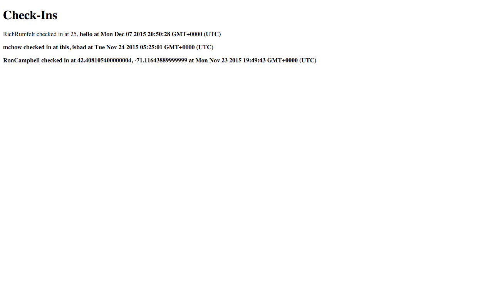

Security Assessment of Mapchat
Prepared by Josh Berl 12/7/2015
Introduction
The product being tested is a location log for multiple users to checkin. It displays the most recent checkin for each user. I am attempting to find and document vulnerabilities in Grant Pemberton's Mapchat. Vulnerabilities here include succeptability to cross site scripting (from now on referred to as XSS), lack of data validation, injection of additional fields. The specified product has no authentication, as it was not a part of the project to do so, so any user can send any user's data to the database.
Methodology
Tests were first run without looking at the code, using curl to check for a lack of data validation, extra parameters, and injection of additional fields. After this, tests were run with access to the code and the database, to see the effects of attempted XSS and data injection.
Abstract of Findings
The application, unfortunately, relies of the trusted user to provide valid input. The message functionality was not implemented, so much of the data had to be injected through the latitude and longitude parameters of input. The application proved to be susceptible to the injecting of styling, the addition of invalid data to the database, and XSS.
Issues Found
-
Data Validation
- The application does not ensure that the data in the lat or lng input parameters are valid latitudes or longitudes, so I first was successfully able to enter an invalid latitude and longitude using curl, providing values too large to be real lat or lng
curl --data "login=RichRumfelt&lat=250&lng=250&message=test_b" https://fathomless-castle-8172.herokuapp.com/sendLocation which entered into the database without error.
I then attempted to put a string as the the lng parameter, using curl --data "login=RichRumfelt&lat=250&lng=hello&message=test_b" https://fathomless-castle-8172.herokuapp.com/sendLocation and I successfully entered this into the database without error.
- This was found on the root page of the app
- This is a low severity issue, as it will not crash the server or affect any other data entries
- This problem can be solved by checking to see if the value is a valid latitude or longitude. One could include before the insert the function a test along the lines of
!(-90 <= lat <= 90) || !(-180 <= lng <= 180)
-
Data Injection
- As part of the theme of the lack of data validation, I tested to see if input is at all sanitized, by injecting CSS into the database. I attempted to change the styling of the root HTML by using curl to enter the bold tag.
curl --data "login=RichRumfelt&lat=25&lng=<b>hello" https://fathomless-castle-8172.herokuapp.com/sendLocation
- This also was found on the root page of the app

- This is a medium severity issue, as it does not affect the functionality of the site, but it does impact more data entries than the original.
- This problem can be solved by checking the lat and lng parameters to make sure the values are in fact numbers and not stylings. Googling around it looks as if there is an IsNumeric() function which would make sure that the parameters are numbers.
-
XSS
- Because there is no input sanitation, one could inject any sort of data as input, including scripts. I injected a script to cause a pop-up on the site using curl.
curl --data "login=RichRumfelt&lat=25&lng=<script> alert('HI'); </script>" https://fathomless-castle-8172.herokuapp.com/sendLocation
- This also took place at the root page of the app
- This is a high severity issue, as it freezes the site, preventing clients from accessing any of the site's data. This would be particularly harmful if this injected script redirected the site to a different url. It also prevents any of the rest of the page activity from taking place, such as any other possible scripts included.
- This problem could also be solved by making sure the parameters are the correct type before entering them into the database.
-
Lack of Authentication
- To send data to the database, all identification required is a username. Howerver, because there is no authentication, anybody who knows a username can submit data for that username. I can use curl to send the location of "mchow" just as easily as I can send the location of "kaytea".
- The location of this issue is in sendLocation as well as latest.json, as there is no guarantee that the location received is accurate
- This is a high severity issue in the accuracy of the application. No location is guaranteed to be accurate. No one is safe.
- This could be solved by adding a password parameter, that needs to match a dictionary username password key pair.
Conclusion
Almost all of these issues could be resolved through data sanitization. This would ensure that the parameter values are numbers where they should be numbers, and string where they should be string, without adding in potentially malicious html and javascript. This solution would have a fairly low cost, adding a few checks which could all be accomplished in a few lines of code before entering any data into the database. Adding a password field, could prove to be a bit more costly, as it require changes on the frontend and the server, and it would require another collection of all usernames and passwords. Overall, the most important priority for database and application security is the sanitization of data.